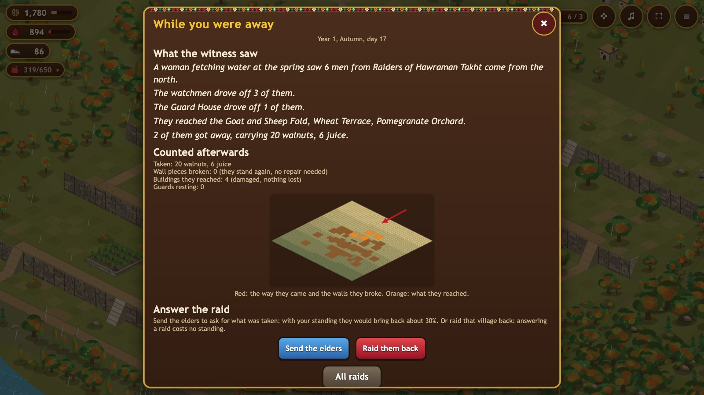

Start here

Build a terraced village in the mountains of Hawraman and bring your family through the winter.
Play now How to playFind your way
 How to playThe whole game, step by step, with pictures.
How to playThe whole game, step by step, with pictures.
Playing onlineReal neighbours, a safe copy of your village, another device. Tribes and scoreStand together, help each other, and see how you compare.
Tribes and scoreStand together, help each other, and see how you compare. BuildingsEvery building, level and price.
BuildingsEvery building, level and price. HouseholdYour family: work, Klash and guard.
HouseholdYour family: work, Klash and guard. Guards, allies and heroesGuards, allies for hire and two heroes.
Guards, allies and heroesGuards, allies for hire and two heroes. Goods and foodWhat you store and what feeds the family.
Goods and foodWhat you store and what feeds the family. AnimalsHens, goats, cows and their winter needs.
AnimalsHens, goats, cows and their winter needs. Seasons and the yearSeasons, hard winters and the harvest.
Seasons and the yearSeasons, hard winters and the harvest. Bazaar and KlashTrading fruit, and what Klash can do.
Bazaar and KlashTrading fruit, and what Klash can do. Raids and defenceRaids on you, the witness log, walls and the wild.
Raids and defenceRaids on you, the witness log, walls and the wild.Hawraman Chronicles is a village survival game set in the stepped stone villages of Hawraman, in the Zagros mountains. You build terraces and houses, raise a household, keep a herd and fill the stores, so that your family comes through every winter.
Your first days
- Collect. Tap a building that has something ready (the Walnut Grove, the Pomegranate Press) to collect it. Walnuts pay for building; Pomegranate Juice pays for learning skills and hiring allies.
- Build and upgrade. Open the Shop. Your Builder's Huts decide how many buildings can go up at once. The Diwan-khana, the big house, decides what you may build and how many of each.
- Look at the year. Open the Year panel. Every season lasts one real day and has 30 game days. Winter is the test: snow closes the pass and the family lives on what it stored.
- Fill the stores before winter. The Stores panel shows how many days of food, fodder and firewood you have. The Dairy Room, the Kitchen, drying fruit on the roofs and the autumn slaughter all turn the year's harvest into winter food.
- Look after the household. In the Household panel each member works, makes Klash or stands guard. Guards protect the herd and the village, but they do not work.
Where to play
In any web browser on a computer, tablet or phone: https://hawraman-api-production.up.railway.app/. Nothing to install. Your village is saved in that browser.
What to read next
- How to play: the whole game step by step, from the first tap to the first winter.
- Playing online and Tribes and score: raids between players, moving your village to another device, tribes and helping each other.
- Seasons and the year: what changes through the year, hard winters and fast forward.
- Goods and food: everything you can store and how much of it feeds the family.
- Buildings: every building, its levels and costs.
- Bazaar and Klash: trading, and what the precious Klash can do.